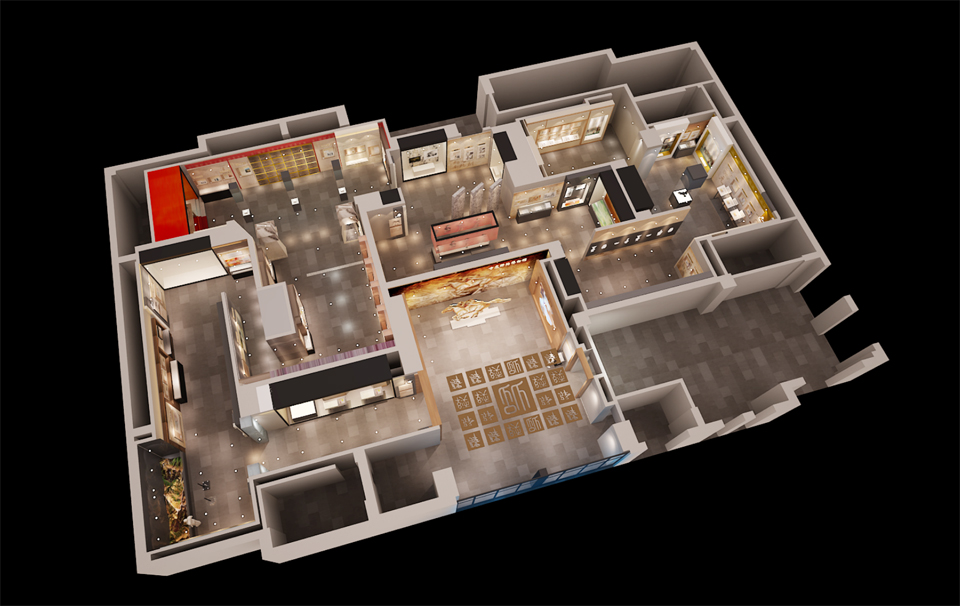
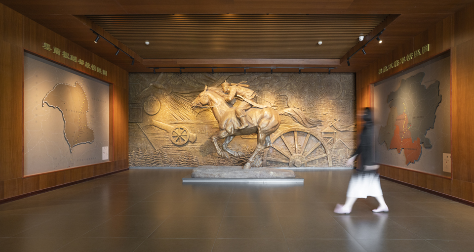
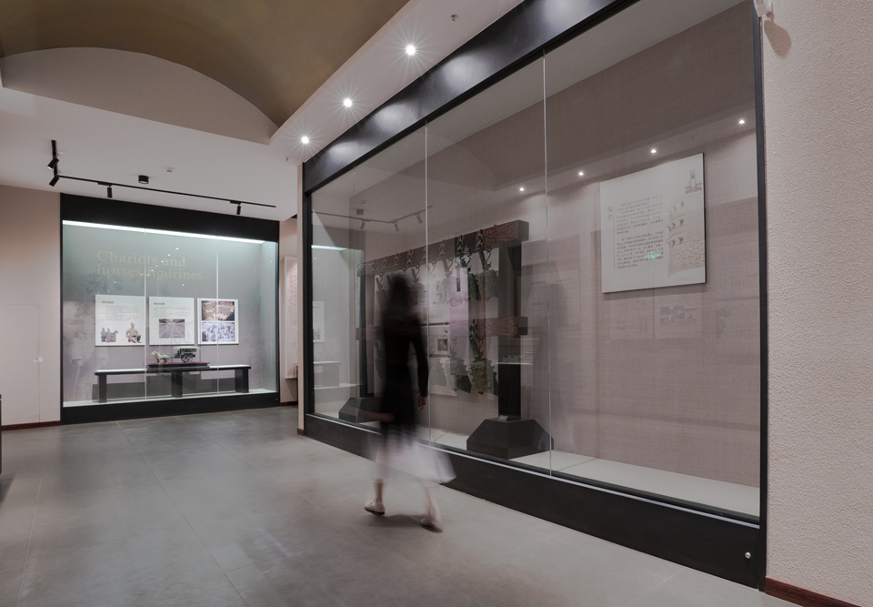

墨尔根古道驿站博物馆
DaLian|大连墨尔根古道驿站博物馆
墨尔根古道驿站博物馆是中国第一个古道驿站博物馆 ，它详细地记述了从商周时代一直到明清的驿站文化。本案是在原有展馆经营多年之后的改陈项目，从多个维度提升展示效果，说好符合时代的“驿站”故事。
改陈亮点一 主次分明
此次改陈突出重点章节的展示，空间及展示形式富于变化，使核心展示内容更为聚焦，让参观节奏收放自如。展示内容元素具有鲜明的主题性，时间叙事线明显清晰。
 改陈亮点二 内容交流
通过对文献古籍的研究与整理，扩充展示内容，收集、制作了大量展品、雕塑，丰富展线，让图片文字与展品“对话”，增加展示的可看度与严谨性。